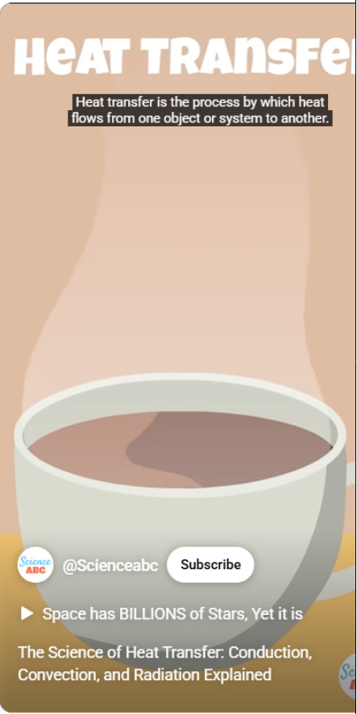
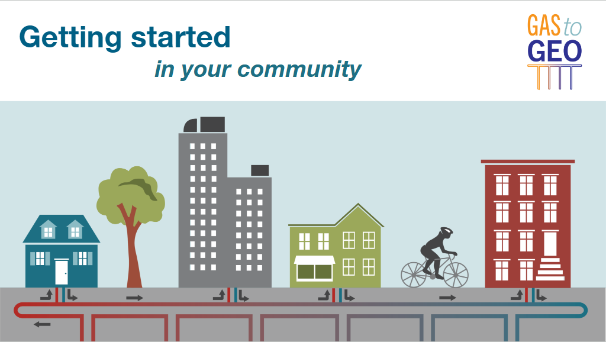
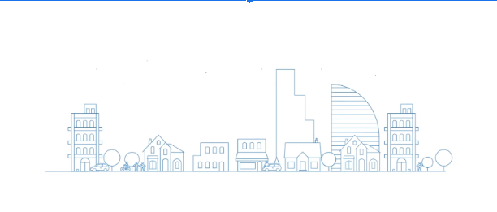

Heating, cooling, district systems, benefits, and community process
The combined portal covers the technical basics, community organizing process, physical implementation, and case-study material from the original website.
Community Geothermal Learning
This combined site keeps the experience simple: a modern landing page up front, and the original multi-page educational website available from the top menu.
The combined portal covers the technical basics, community organizing process, physical implementation, and case-study material from the original website.
Home acts as the landing page. Page 2 preserves the legacy MIT RE Clinic website inside the same overall experience, so nothing important is lost.

Chapter 1
Thermal energy, home heating, district systems, and geothermal electricity.

Chapter 2
Coalition building, stakeholder alignment, and transition planning.

Chapter 3
Site selection, scoping, retrofits, and the built environment.